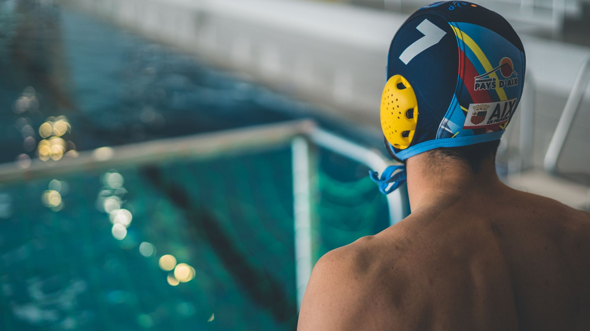

A Big Move for National Youth Water Polo
USA Water Polo recently announced that the Delfina USA Champions Cup, one of the most prestigious national competitions for 14U players, is heading to a brand-new location — Las Vegas, Nevada. This exciting shift signals continued growth in youth water polo across the country and opens up a conversation that matters deeply to families right here in the Tampa Bay area: is your young athlete on a path that could lead to stages like this one?
For parents in Wesley Chapel, Land O' Lakes, and the surrounding communities, news like this is worth paying attention to. National tournaments at the 14U level are not just about competition — they are milestones that shape the trajectory of a young athlete's development, confidence, and future opportunities in the sport.
What Is the Delfina USA Champions Cup?
The Delfina USA Champions Cup is a national-level tournament organized by USA Water Polo, designed specifically for players in the 14-and-under age group. It brings together elite club teams from across the United States to compete at the highest level of youth water polo. Moving the event to Las Vegas introduces a new venue with world-class aquatic facilities and further elevates the profile of the competition.
For young athletes who dream of representing their clubs and regions on a national stage, this tournament represents exactly the kind of goal worth working toward from an early age.
Why National Exposure Matters at 14U
Many families underestimate how important the 14U age group is in the development pipeline for water polo players. By this stage, young athletes are building the technical skills, game intelligence, and competitive mindset that will define their high school and collegiate careers. Competing at a national level — or simply training with that goal in mind — accelerates growth in ways that local competition alone cannot replicate.
- Technical refinement: National competition demands precision in passing, shooting, and defensive positioning that pushes players beyond their comfort zones.
- Mental toughness: Facing unfamiliar opponents in high-pressure environments builds resilience that carries over into every area of life.
- Recruiting visibility: High school coaches and college scouts pay attention to athletes who perform at national events, even at the youth level.
- Team chemistry: Extended tournament play deepens trust and communication between teammates in ways that short local meets simply cannot.
How Tampa Bay Families Can Start Preparing Now
If your child is currently in the 10U, 12U, or early 14U age range, now is the ideal time to build a strong foundation. Consistent training, quality coaching, and early exposure to competitive play are the building blocks that make national tournament aspirations realistic rather than just dreams.
At Nexar Aquatic Academy, based in Wesley Chapel and Land O' Lakes, young athletes receive the structured training and personalized coaching needed to develop into competitive water polo players. The goal is not simply to teach the basics — it is to build complete athletes who are ready for whatever stage comes next, whether that is a regional championship or a national event like the Delfina USA Champions Cup.
The Journey Starts Here
Las Vegas may feel far away from the pool decks of Wesley Chapel and Land O' Lakes, but the journey to get there begins with the work young athletes put in every single day. Tournaments like the Delfina USA Champions Cup remind us of what is possible when talent meets preparation and opportunity.
Whether your child is just getting started in water polo or is already competing at the club level, Nexar Aquatic Academy is here to help them reach their full potential. Talk to our coaching staff today about how we can build a development plan tailored to your young athlete's goals.
Ready to get in the water?
First practice is completely FREE — no commitment needed.